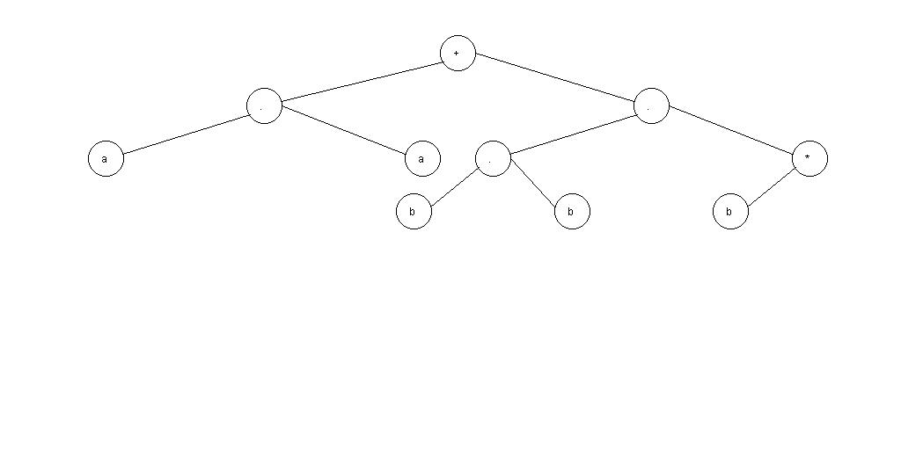
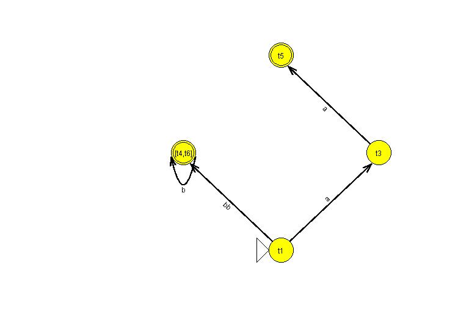
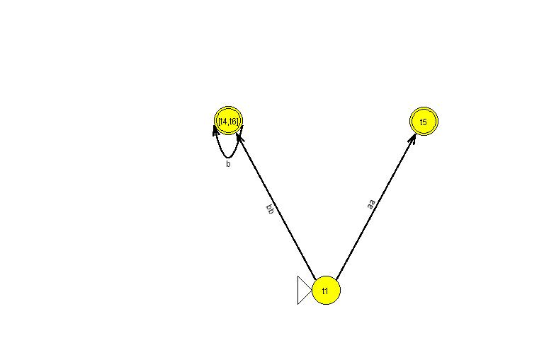
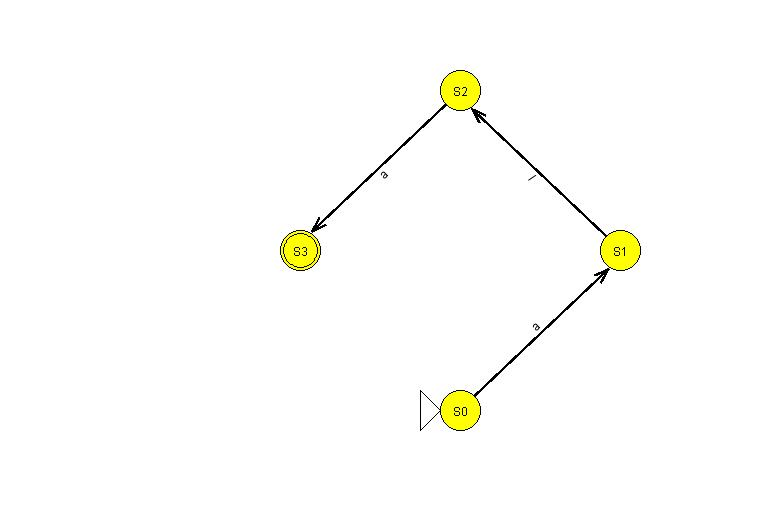
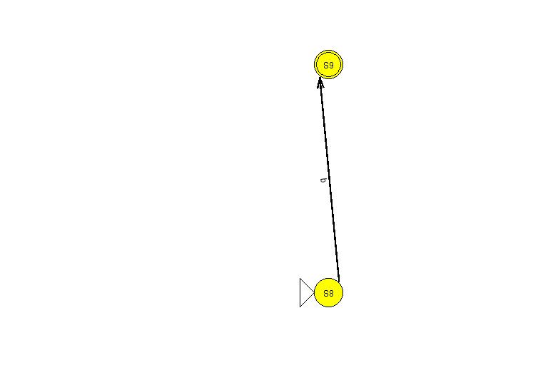
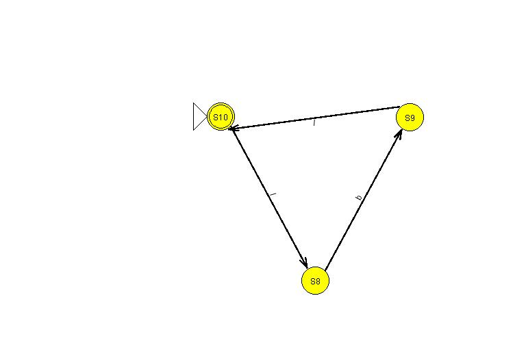
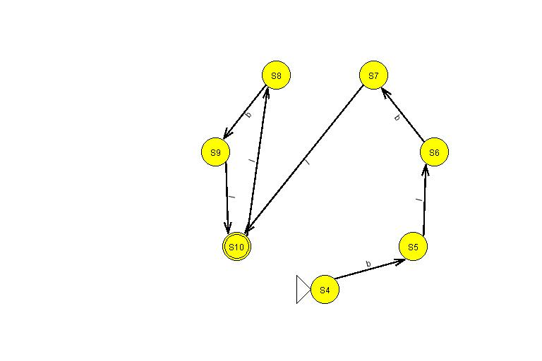
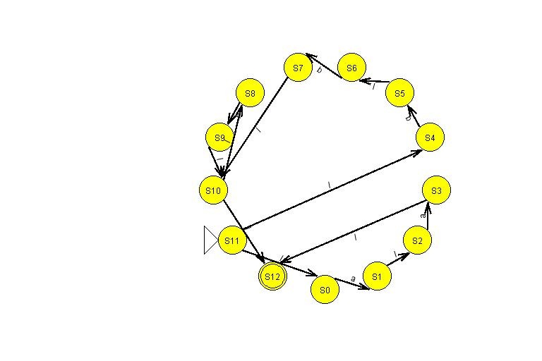

Expresion regular: aa+bbb*

Paso numero 1: Automata que reconoce una sola letra

Paso numero 2: Automata que reconoce una sola letra

Paso numero 3: Concatenacion de dos automatas

Paso numero 4: Automata que reconoce una sola letra
Paso numero 5: Automata que reconoce una sola letra
Paso numero 6: Concatenacion de dos automatas
Paso numero 7: Automata que reconoce una sola letra

Paso numero 8: Automata que reconoce la repeticion cero o mas veces del anterior

Paso numero 9: Concatenacion de dos automatas

Paso numero 10: Union de dos automatas
Automata final
